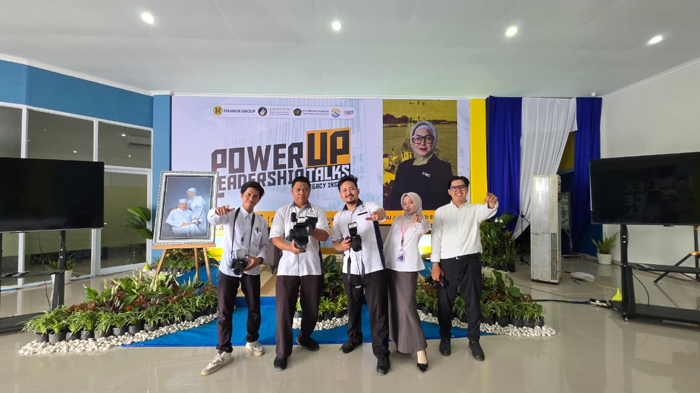
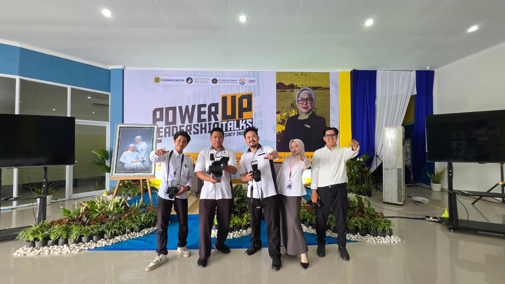

Tentang Saya
Saya Said Nabil, Mahasiswa UIN Antasari Banjarmasin, Prodi Pendidikan Agama Islam, memiliki keahlian
- Fotografer
- videografer
- Streamer
- Instalasi dasar Listrik
- Management Event
Saya Said Nabil, Mahasiswa UIN Antasari Banjarmasin, Prodi Pendidikan Agama Islam, memiliki keahlian
[2023-2025] - [musyrif Asrama 4 mempunyai tanggung jawab membimbing dan mendampingi para mahasantri. Tugas utama musyrif adalah mengawasi kedisiplinan, membina akhlak, serta membantu pelaksanaan kegiatan keasramaan seperti solat 5 waktu, tadarus, Tahajud, dan program Success Story, Setting Goal, dan kajian rutin. Selain itu, musyrif juga berperan sebagai penghubung antara pengurus Ma’had dan mahasantri, memastikan suasana asrama tetap kondusif, bersih, dan penuh nilai-nilai islami. Pengalaman ini melatih kepemimpinan, tanggung jawab, serta kemampuan komunikasi dan manajemen waktu. ]


[2025] - [Tugas di Digitaliz YHC bagian foto, video, dan streamer berfokus pada dokumentasi serta publikasi kegiatan yayasan Berkualitas Profesional. Pada bidang foto, tugasnya meliputi mengambil gambar yang menarik dan berkualitas dari setiap acara. Di bagian video, bertanggung jawab untuk merekam, mengedit, dan mengemas video menjadi konten kreatif yang informatif dan estetis. Sementara di bagian streamer, tugasnya adalah mengatur siaran langsung (live streaming), termasuk mengelola kamera, audio, dan koneksi agar acara dapat disaksikan secara daring dengan lancar. Semua peran ini menuntut kreativitas, ketelitian teknis, kerja tim, dan kemampuan beradaptasi terhadap berbagai situasi lapangan.].
 

[2023] - [Pelatihan Instalasi Dasar Listrik di Balai Latihan Kerja (BLK) bertujuan untuk memberikan pemahaman dan keterampilan praktis kepada peserta dalam bidang kelistrikan. Peserta dilatih untuk memahami dasar-dasar listrik, mengenal komponen dan alat listrik, serta mempraktikkan pemasangan instalasi rumah tangga sederhana sesuai dengan standar keselamatan kerja. Melalui pelatihan ini, peserta diharapkan mampu merancang, memasang, dan memperbaiki sistem kelistrikan sederhana, serta memiliki dasar kompetensi untuk bekerja di bidang teknik listrik atau melanjutkan ke pelatihan tingkat lanjut.]

Email: [Saidn2334@gmail.com]